Kerala Celebrates Solar Eclipse!
Thiruvananthapuram: Hundreds of people
flocked to Kanakakunnu Palace to observe
the solar eclipse. Arrangements had been
made at schools in different parts of the
state to witness the solar eclipse.
Haven’t you read about solar eclipse, a celestial wonder? Have you ever seen
a solar or lunar eclipse?
How does an eclipse occur? Discuss.
To understand such celestial wonders, we should have an idea about shadows.
145
Page 42
Figure fig_ch03_p042_01 (Page 42)
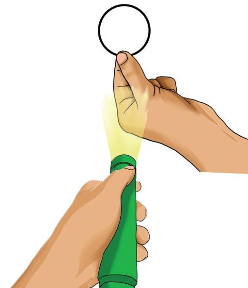
Figure fig_ch03_p042_02 (Page 42)
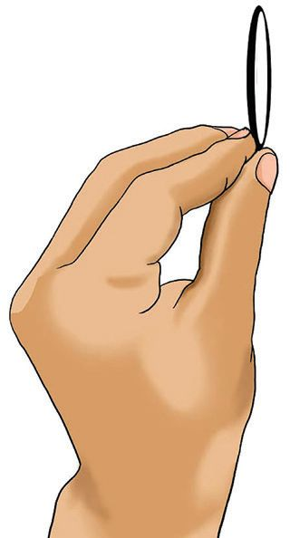
Figure fig_ch03_p042_03 (Page 42)
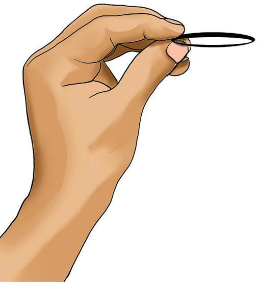
Figure fig_ch03_p042_04 (Page 42)
Basic Science
Shadow
You might have seen your own shadow. How
is it formed?
Observe the picture.
u
u
u
In which direction will the shadow of the
tree be seen in the morning?
In which direction will the shadow of
this tree be in the evening?
What change can you see in it at noon?
Observe the changes in the size and the
direction of the shadow of the tree in the above situations. Record it in your
Science Diary.
Draw the position of the Sun by looking at the shadow shown in the picture.
Will the shape of the shadow be the same at all times? Let’s do a simple
experiment.
Figure - 1
Figure - 2
Figure - 3
Hold a bangle as shown in the figure 1. Light a torch against it. Observe the
shape of the shadow formed on the wall. Hold a bangle as shown in the figures
2 and 3. Repeat the process. Are the shapes of all the three shadows the same?
Repeat the experiment using the following objects given in the Science Kit.
Materials: Pen, cricket ball, piece of glass, instrument box, plate, steel glass,
football.
Hold each object against the wall in different ways and light the torch onto
them. Tabulate your observations.
Analyse the table. Do all the objects cast shadows?
On which side of the source of light is the shadow formed?
Which were the objects that always formed shadow of the same shape?
Shadow and Light
All opaque objects form shadows. Shadow forms in the direction opposite
to that of the source of light. Only spherical objects always form circular
shadow.
Try to get different shapes of your shadow as shown in
the figure.
The Shadow of the Celestial Spheres
The Earth, the Moon and other celestial bodies are opaque
objects. Do they form shadows?
We have learnt that the Sun, a source of light is very large
and that the Earth is relatively small in size.
Observe the ray diagram of the sunlight reaching the Earth.
The Earth does not allow sunlight to pass through it. Hence shadow is formed
on the other side. Observe the shaded part A in the figure in which the shadow
of the Earth is formed.
Look at the shape of the Earth’s shadow. Doesn’t it look like a cone ice cream cup?
What are the facts you have understood about the Earth’s shadow?
u
u
u
Being an opaque object, the Earth forms its shadow.
The shadow of the Earth is always formed in the direction opposite to the
Sun.
The Earth’s shadow gradually diminishes and finally disappears as it
moves away.
You have now understood the shape of the shadow of the Earth. Guess
whether it will be day or night where the Earth’s shadow is formed. Write it
down.
Discuss with the teacher and check whether your guess is correct.
Observe the picture.
Jupiter
Mercury
Earth
Sun
Mar
Doesn’t the moon also cast a shadow like
this?
Moon
s
Are all celestial bodies of the same size? The
size of the shadows varies with the change
in the size of the celestial bodies.
In a celestial sphere, it is day where the light
falls and night where the shadow is formed.
Venus
Moon in Earth’s Shadow
We know that the Moon is a sphere that
revolves round the Earth. Among the following, which is the probable position
of the Moon in the shadow of the Earth?
Moon
Earth
Sun
Sun
Figure - A
The Moon comes in between the
Sun and the Earth
Earth
Moon
Figure - B
The Earth comes in between the
Sun and the Moon
148
Page 45
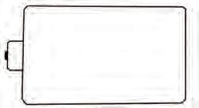
Figure fig_ch03_p045_01 (Page 45)
Class - VII
Discuss and record your answer in the Science Diary.
The figure below shows the celestial spheres the Sun and the Earth and the
Moon's orbit. B, C and D are the various positions in the path through which
the Moon revolves round the Earth.
The Sun
Moon’s
orbit
The
Earth
At which of these positions does the Moon enter the Earth’s shadow?
B
At what position does the Moon enter completely in the Earth’s shadow?
At which point does the Moon come out of the Earth’s shadow?
In the above picture, the part of the Moon where sunlight falls is facing the
Earth. On this day, the Moon can be seen from the Earth. But when you reach
position C, you cannot see the Moon. Why? Isn’t it because the Moon comes
in the shadow of the Earth?
Lunar Eclipse
As the Moon revolves round the Earth, the Earth sometimes comes
between the Sun and the Moon in a straight line. At this time the Moon
will be in the shadow of the Earth. This is the lunar eclipse.
Lunar eclipse is one of the most beautiful phenomena visible in the sky. During
a total eclipse, the Moon appears dim in orangish red colour. Remember to
observe the upcoming lunar eclipse without fail.
149
Page 46
Figure fig_ch03_p046_01 (Page 46)
Basic Science
Earth and Moon’s Shadow
What happens when the Moon comes in a straight line between the Sun and
the Earth? The Moon is a smaller sphere than the Earth. Can the shadow of the
Moon completely cover the Earth? Observe the picture and record your
inference in the Science Diary.
The Sun
The Moon
The portion where
the shadow of the
Moon falls on the
Earth
The Earth
Now you might have understood that the Moon’s shadow does not completely
cover the Earth. Can those people, on the side in which the Moon’s shadow
falls on the Earth see the Sun at that time? The Sun cannot be seen at that time
because the Moon is covering the Sun. This is solar eclipse. Does this
phenomenon occur during the day or at night? Analyse the figure, arrive at an
inference and discuss in the class.
Solar Eclipse
When the Moon revolves round the Earth, the Moon rarely comes
in between the Earth and the Sun in a straight line. At this time the
Moon's shadow falls on the Earth. People in the area where the
Moon's shadow falls cannot see the Sun because the Moon covers
the Sun. This is solar eclipse. A solar eclipse is visible only to those
in the lunar shadow.
150
Page 47
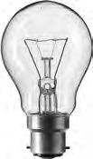
Figure fig_ch03_p047_01 (Page 47)
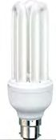
Figure fig_ch03_p047_02 (Page 47)
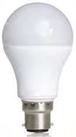
Figure fig_ch03_p047_03 (Page 47)
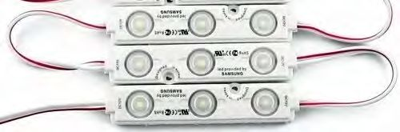
Figure fig_ch03_p047_04 (Page 47)
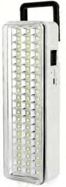
Figure fig_ch03_p047_05 (Page 47)
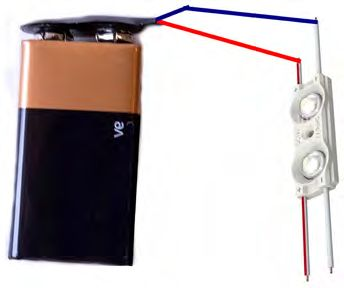
Figure fig_ch03_p047_06 (Page 47)
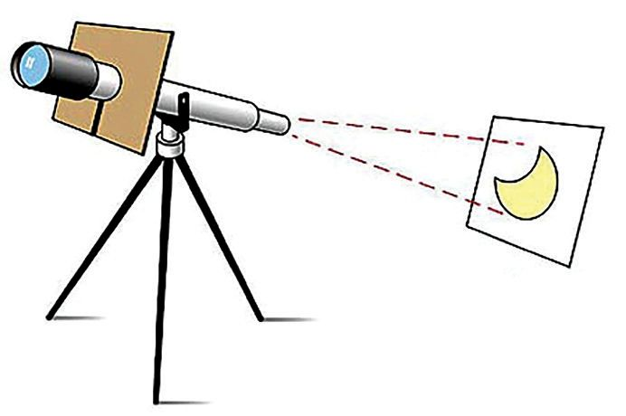
Figure fig_ch03_p047_07 (Page 47)
Class - VII
Look at the pictures of different solar eclipses.
Total solar eclipse
Annular solar eclipse
Partial solar eclipse
We can observe total solar eclipse, annular solar eclipse and partial solar
eclipse. Analyse the above pictures. Discuss their characteristics and record
them in the Science Diary.
Observing a Solar Eclipse
You might have noticed the news related to the solar eclipse in newspapers.
Places suitable for observing solar eclipse and the precautions to be taken
usually appear in the news.
How can we observe a solar eclipse safely? Read the following note and write
down your findings in Science Diary.
Methods of Observation
Lunar eclipse can be observed directly. But observing the solar eclipse
directly is harmful to the eyes. Hence the solar eclipse must be observed only
by using filters and reflecting the Sun’s rays in different ways. Eclipses can
be observed using quality filters in telescopes and binoculars. Decorative
glitter papers and unsafe X-ray films should not be used for observing solar
eclipse.
Solar filter spects
Solar filter used in
the telescope
Pinhole projector
151
Method of projection
using telescope
Page 48
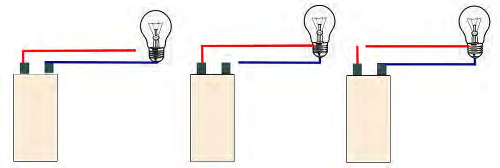
Figure fig_ch03_p048_01 (Page 48)
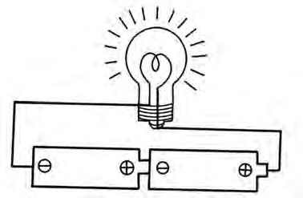
Figure fig_ch03_p048_02 (Page 48)
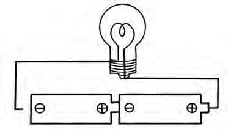
Figure fig_ch03_p048_03 (Page 48)
Basic Science
For further reading
Predicting an Eclipse
There are many softwares and apps available to predict the eclipse. With
such apps or softwares we can find out in advance when the eclipse will be
most beautiful. These can also be used to watch the scenes of past eclipses
again and again.
Meaning of the Moonlight
Haven’t you seen a beautiful glowing Moon in the sky at night?
How is it possible for the Moon to shine so brightly,
when it can’t shine by itself? Observe the image.
What would be the reason for the brightness of the
moon?
In the picture given below, can’t you see the
sunlight falling simultaneously on the Earth and
the Moon?
Since these are opaque objects, won’t the light be
reflected?
The image shows the light falling on the Moon reach the Earth after reflection.
152
Page 49
Figure fig_ch03_p049_01 (Page 49)
Class - VII
Moonlight is sunlight reflected from the Moon. The surface of the Moon is
rough. If so, is it due to regular or irregular reflection? Discuss and write it
down in your Science Diary.
Moonlight
The sunlight falling on the Moon's surface gets scattered and reaches
the Earth. This is the moonlight that we see at night.
At night you have experienced bright as well as dim moonlight. Let’s try to
find out the reason for this.
Phases of the Moon
We see the Sun in the same shape every day. But what about the Moon?
Observe the shape of the Moon on different days and draw them in the Science
Diary.
Why is the spherical Moon seen in different shapes on different days? Let’s do
an activity.
Materials needed: Three smiley balls, black paint
Examine the pictures and notes in the boxes given below. Paint half of each
smiley ball with black paint as suggested in the notes in the boxes.
Paint the other side of the
smiley face completely.
Paint, covering half of the
smiley face.
Paint, covering the entire
smiley face
The black painted part represents the shadow side of the Moon. The unpainted
part represents that part of the Moon where light falls.
153
Page 50
Figure fig_ch03_p050_01 (Page 50)
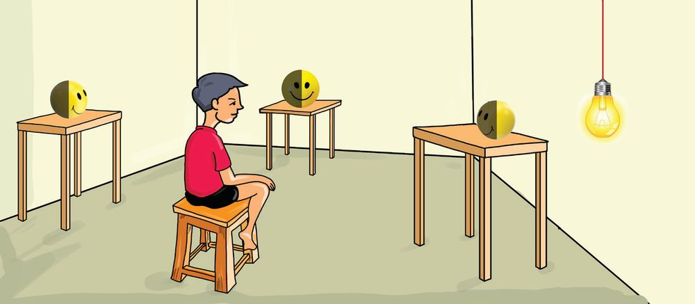
Figure fig_ch03_p050_02 (Page 50)
Basic Science
Place the balls in the class in east-west direction as shown in the picture
below. The unpainted part of the smiley ball should face the light and the
black painted part should face the side opposite of light. Imagine the smiley
ball as the
Moon and the
B
C
bulb as the
A
Sun. A,B and
C are the
positions
when the
Moon revolves
around the
East
West
Earth.
The child should sit in the middle of balls A and C and observe.
As per the picture, how will the child be viewing all the three balls?
On which ball can the child see the shadow portion completely?
Ball placed at which position enables the child to view half illuminated and
half shadow portions?
On which ball can the child see the illuminated portion completely?
Given below are the positions and shapes in which a child observed the Moon
in the sky after sunset on different days. Analyse the given picture based on
the activity you have done.
154
Page 51
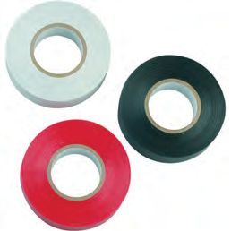
Figure fig_ch03_p051_01 (Page 51)
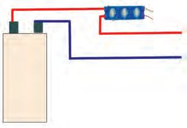
Figure fig_ch03_p051_02 (Page 51)
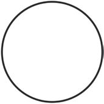
Figure fig_ch03_p051_03 (Page 51)
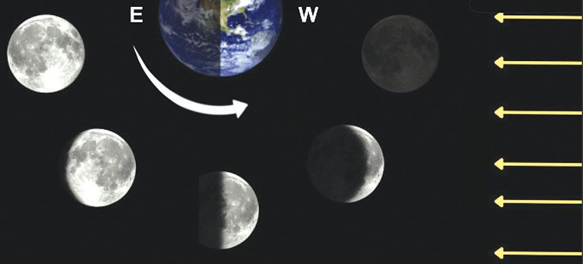
Figure fig_ch03_p051_04 (Page 51)
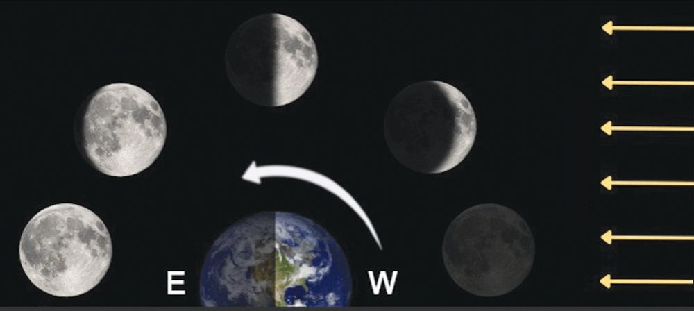
Figure fig_ch03_p051_05 (Page 51)
Class - VII
Doesn’t the illuminated part of the Moon viewed from the Earth show a
difference at each position?
Examine the table given below and record your inferences in your Science
Diary.
When the Moon reaches The shadow side of the Moon
the position D
completely faces the Earth
When the Moon reaches Half the illuminated and half the
the position E
shadow sides face the Earth.
When the Moon reaches The illuminated side completely faces
the position F
the Earth.
New Moon and Full Moon
New Moon occurs when the shadow side of the Moon completely faces
the Earth. We cannot see the Moon on this day. Full Moon occurs when
the illuminated part of the Moon completely faces the Earth. Half Moon
is seen when the half illuminated and half shadow portions of the Moon
face the Earth.
Waxing and Waning
Sunlight
Sunlight
Observe the pictures given below. The two pictures A and B represent the
revolution of the Moon from New Moon to Full Moon and vice versa. Are
both the pictures alike? What differences can you observe in these pictures?
Picture - A
Picture - B
Which picture shows the illuminated portion of the Moon getting increased,
when viewed from the Earth?
Which picture shows the illuminated portion of the Moon getting decreased,
when viewed from the Earth?
155
Page 52
Figure fig_ch03_p052_01 (Page 52)
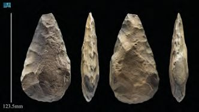
Figure fig_ch03_p052_02 (Page 52)
Basic Science
Waxing and Waning
When viewed from the Earth, the illuminated part of the Moon keeps on
increasing from the New Moon to Full Moon. This period is known as the
waxing or white halo.
When viewed from the Earth, the illuminated part of the Moon keeps on
decreasing from the Full Moon to New Moon. This period is known as the
waning or black halo.
Waxing and waning (Vridhikshayam) is the difference in viewing the
illuminated and shadow portions of the Moon as it revolves around the
Earth.
For further reading
India's Wonder that Landed on the Moon
India’s pride Chandrayaan-3 is the
first probe to land near the South Pole
of the Moon. Launched on 14 July
2023, Chandrayaan-3 landed safely
near the South Pole of the Moon on 23
August 2023. India is the fourth
country to have made a soft landing
on the Moon. ISRO is moving ahead
with Chandrayaan missions to bring
rocks and soil from the Moon to the Earth in the future. Gaganyaan, a
human space probe and Mangalyan-2, a Mars rover are some of the
future missions of ISRO. Get information about India’s space missions
from the official website - isro.gov.in of ISRO.
How will you find out the New Moon day and Full Moon day from a calendar?
Which are the symbols used in the calendar to indicate these days?
The symbol
and the symbol
are used in a calendar to represent New
Moon and Full Moon respectively. Observe the given calendar. Don’t you see
these symbols in the calendar? By looking at the calendar, can you find out
how many days it takes for the Moon to reach the New Moon from Full Moon.
156
Page 53
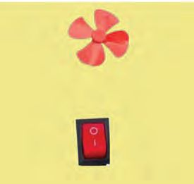
Figure fig_ch03_p053_01 (Page 53)
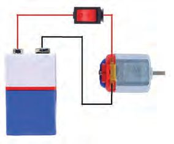
Figure fig_ch03_p053_02 (Page 53)
Class - VII
The date of Full Moon in the
calendar
May
5
The date of New Moon in the
calendar
Number of days taken to reach
New Moon from Full Moon
Examine the next month’s calendar also . Find out how many days are needed
for the Moon to reach the next New Moon from the Full Moon?
The date of Full Moon
Date of New Moon in the calendar
The number of days between two
consecutive New Moons by
checking both the calendars.
Didn’t it take 30 days for one New Moon to reach the next?
The Moon takes 27 13 days to revolve round the Earth once. What is the reason
for this difference? Discuss.
From New Moon to New Moon
The Earth needs 365 14 days to revolve around the Sun once. By the time the
Moon revolves around the Earth once, the Earth would have travelled some
distance in its orbit with the Moon around the Sun. Thus a change occurs to
the position of the Earth. Hence the Moon will have to travel some more
distance in the same path to repeatedly see the phases of the Moon. It takes
more than two days for this. That is why it takes 29 12 days from one New
Moon to the next New Moon.
Check the following months in the calendar also. Aren’t your findings right?
157
Page 54
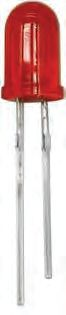
Figure fig_ch03_p054_01 (Page 54)
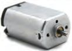
Figure fig_ch03_p054_02 (Page 54)
Basic Science
Let’s Observe
We have searched the reasons for the beautiful sights of the sky. Find out the
New Moon and Full Moon days in this month’s calendar and observe the
Moon every day after the sunset from New Moon to Full Moon. Share your
findings with your friends.
Let’s Assess
1. Observe the picture. Check the orbital path of the Moon around the Earth
and complete the table below:
The position of complete
lunar eclipse
Sun
Moon's
Orbit
Earth
The starting position
of the lunar eclipse
The position where
the lunar eclipse ends
Moon
2. Observe the picture and complete the table by matching the boxes
appropriately.
When the Moon reaches
the position D
Half Moon
When the Moon reaches
the position E
Full Moon
When the Moon reaches
the position F
New Moon
158
Page 55
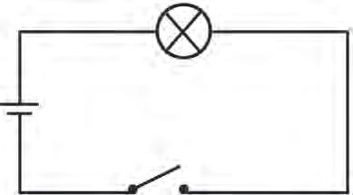
Figure fig_ch03_p055_01 (Page 55)
Class - VII
3. Some statements are given below. Tick () the correct ones.
• A Full Moon is the day when the part of the Moon on which the
sunlight falls, is completely visible from the Earth.
• The waxing crescent Moon is visible overhead at sunset.
• The period of revolution of the Moon and the period during waxing
will be visible are the same.
• Solar eclipse occurs only on New Moon day.
• Lunar eclipse occurs only on Full Moon day.
• Lunar eclipse occurs on all Full Moon days.
Extended Activities
1. Let's do an activity to find out how Solar Eclipse occurs.
Preparation
Place a football on a table.
Let a child stand facing the table at a distance of one and a half meters.
Let the child hold a small ball fixed on a stick as shown in the picture.
Close one eye and hold the small ball closely in front of the other eye and
look at the football on the table.
• Is the football the only thing to disappear from the view?
• Slowly move the small ball forward away from the eye. What change
occurs in viewing the ball?
• How far should the small ball be
held from the eye for the football to
be completely hidden?
• If the small ball is further moved
away from the eye, what change
can be observed in the hidden
football?
• How should you hold the small
ball to hide the football partially?
159
Page 56
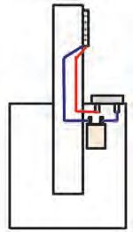
Figure fig_ch03_p056_01 (Page 56)
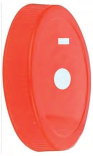
Figure fig_ch03_p056_02 (Page 56)
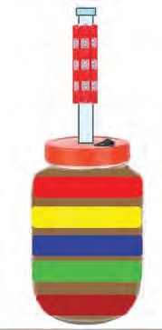
Figure fig_ch03_p056_03 (Page 56)
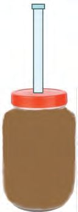
Figure fig_ch03_p056_04 (Page 56)
Basic Science
When football is
hidden completely
When the small ball is
held slightly away
from the eye
When the small ball
partially covers the
football.
Compare the observations you had during the above experiment with
the different pictures of solar eclipse given below.
2.
What are India's achievements in Space Science? Collect information and
prepare an article. Conduct a seminar exploring the ICT possibilities.